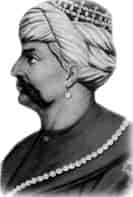

YAVUZ SULTAN SELİM
Annesi : Gülbahar Hatun
Doğumu : 10 Ekim 1470
Vefatı : 22 Eylül 1520
Saltanatı : 1512 - 1520 (8 yıl)
Yavuz Sultan Selim, uzun boylu, geniş omuzlu, kalın kemikli ve omuzları arası geniş yuvarlak başlı, kırmızı yüzlü ve çatık kaşlı, uzun bıyıklı yiğit bir padişah idi. Sert tabiatlı ve cesurdu. Bu yüzden savaşı severdi.
Kuvvetli bir ilim tahsili yapmıştı. Edebiyata merakı vardı. Birçok Farsça şiirler yazmıştır. Şiirleri en yüksek bir divan şairi kadar kuvvetlidir. Geniş bir kültür ve siyasete sahipti. Savaştan hoşlanmakla beraber çok ince bir ruha da sahipti. İran’a yaptığı seferde Şah İsmail’i on iki saatte perişan etti. Şah İsmail’in iki karısı da esir oldu. Ordugâhtaki hazine ve altın taht ele geçirildi. İran’ın o zamanki başşehri Tebriz’e girdi. 2500 km.’lik bir yolu yürüyerek gelip, böyle parlak bir zafer kazanmak tarihte eşine az rastlanır şeylerdendir. Adana, Gaziantep, Hatay, Urfa, Diyarbakır, Mardin, Siirt, Muş, Bingöl, Bitlis, Tunceli vilâyetlerini Osmanlı topraklarına kattı. Dulkadir Beyliği’ni, Musul, Kerkük ve Erbil’i Osmanlı hudutlarına dahil etti. Eyyûbi Melikliği’ni aldı. 1516’da Mısır Seferi’ne çıktı. 27 Temmuz’da Ramazanoğulla-rı Beyliği’ni ilhak etti. 24 Ağustos’ta Mısır Memlükleri ile Mercidabık Ovası’nda karşılaştı. Memlükleri kesin bir şekilde mağlup etti. 28 Ağustos’ta Halep’e girdi. 29 Ağustos 1516’da bütün Kutsal Emanetler İstanbul’a getirildi. Suriye, Lübnan ve Filistin tamamen fethedildi. Kendi zamanına gelinceye kadar hiçbir hükümdarın göze alamadığı bir işi yaptı ki koskoca Sina Çölü’nü on üç günde geçti. I. Dünya Savaşı’nda yeni tekniğin verdiği imkânlarla bu çöl on bir günde geçilebilmiştir. (Türkiye Tarihi, Yılmaz Öztuna, Hayat Yayınları) 22 Ocak 1517’de Memlükler’i Ridaniye’de tekrar yendi ve Kahire fethedildi. Yavuz, Memlük sultanının cenazesini bizzat omuzlarında taşıdı. Kahire’nin fethinden sonra İstanbul’a gelen Mısır uleması ile Türk uleması Yavuz’un halife olmasını kararlaştırdı. Daha sonra Halife III. Mütevekkil Ayasofya Camii’nde minbere çıkarak Yavuz’un hilâfetini ilân etti. Mütevazı hükümdar, her öğün yemekte tek çeşit yemek yerdi ve ağaçtan tabaklar kullanırdı.
22 Eylül 1520’de ‘Aslan Pençesi’ denilen bir çıban sebebi ile vefat etti. Hayatının son dakikalarında Yasin-i Şerif okuyordu. Oğlu Kanuni Süleyman, Fatih Camii’nde namazını kıldıktan sonra, Sultan Selim Cami avlusundaki türbeye defnettirdi. Tahtı devraldığında 2. 375. 000 km2 olan Osmanlı topraklarını 6.557.000 km2 çıkarmıştır. Bu büyük fütuhatı ise sadece dört yıla sığdırmıştır.
Erkek çocukları: Kanuni Sultan Süleyman.
Kız çocukları: Hatice, Fatma, Hafsa, Şah.